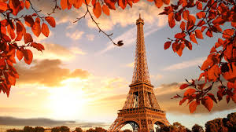
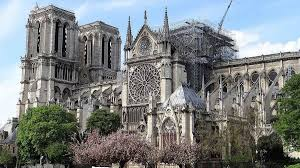
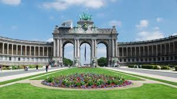

Torre Eiffel

El símbolo más reconocido de París y de toda Francia, la Torre Eiffel, fue construida para la Exposición Universal de 1889. Con sus 330 metros de altura, ofrece vistas impresionantes de la ciudad y es un punto de referencia esencial tanto de día como de noche, cuando se ilumina con un brillante espectáculo de luces.
Asakusa

Esta catedral gótica, situada en la Île de la Cité, es famosa por su arquitectura y por su importancia histórica y cultural. Inaugurada en el siglo XIII, Notre-Dame ha sido escenario de eventos históricos y es conocida por sus vitrales, gárgolas y la novela de Victor Hugo "Nuestra Señora de París".
shibuya

El Arco de Triunfo, ubicado al final de los Campos Elíseos, es un monumento en honor a los caídos en las guerras napoleónicas. Desde su cima se obtienen vistas panorámicas del bulevar más famoso de París, donde se alinean tiendas de lujo, cafés y teatros, reflejando el espíritu elegante y vibrante de la ciudad.